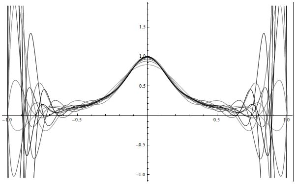

重新理解CAGD中的各种样条
一直以来做 CAGD相关的学习和研究工作，听到最多的、印象最深的、个人感觉最神圣的一个词就是样条。B样条、非均匀有理 B样条、PB样条、T样条等等，为什么有这么多的样条，样条到底是什么，这个问题一直困扰着我。最近面对 T样条的一些问题实在无从下手，于是终于下定决心探寻一下这些样条方法最初的数学意义。
尽管已经学了CAGD教材里的B样条方法、NURBS方法，可以编程实现这些方法，知道各种各样的性质、优点、缺点，但是我依旧不知道这些这些方法中样条两个字到底意味着什么。我相信这是很多刚接触CAGD研究不久的人常有的一个疑问。就像一个刚学象棋的学徒背了几张棋谱，知道有些情况照着棋谱该怎么下了，但是其实还没领悟棋谱中每步棋的用意。或者像刚玩魔方的初学者，照着网上的公式可以慢慢还原一个魔方了，但是想要进一步提高的话就要理解每种变换的意义和由来。因此，一直以来我都想探寻一下数学里面样条函数到底是什么样子的。最近对T样条的学习遇到了一些瓶颈，于是终于下定决心进行一下这件事情。
CAGD教材里对于样条方法的解读往往偏重于应用、性质、算法。学习的重点一般都在于：某种曲线曲面的基本表达式是什么，绘制的算法流程是什么，这类方法有什么优良的性质，基本修改操作有哪些。这些知识对于传统的偏重几何的CAD领域学生而言确实足够了。以此为基础可以很好地入门一些经典的CAD研究方向，包括曲线曲面拟合、光顺、求交、裁剪等等。不过如今我们想要把CAGD中的样条方法发展到其他领域去，就会发现书本上这些知识过于偏重于几何、应用，而没有让我们理解到样条方法深层次抽象的数学原理。通过CAGD的学习可以对样条方法有一个非常形象的认识，然而想要用这些样条方法解决其他领域的问题，则需要首先在抽象的层面寻找可以融汇的地方，然后再引入这些我们熟悉的形象的方法。缺少了抽象层面的理解，我们在发展样条方法的道路上举步维艰。
在研究生的课程中除了CAGD会接触到样条外，另外一个提及样条的就是数值分析课程中的插值与逼近。其实CAGD中讲的很多方法和基函数都与数学里的函数逼近论有着非常深刻的联系。样条函数应该就是在这个领域中首先被提出并深入研究，随后才在CAD领域发扬壮大的。只不过数值分析里讲的样条方法其实与CAGD中的样条方法是一个问题的正逆两个方向。如果用CAGD中的话来讲，数值分析里讲的东西是样条曲线曲面的反算，而CAGD则更多是从正算的角度来进行阐述。不过CAGD中的这种说法很容易让人们误解，以为正算在前反算在后，至少我在之前学习的时候是这样理解的。但是通过最近的阅读，我发现似乎插值与拟合这样的反算问题才是样条方法真正的发源地。
按照数值分析里的思路，样条函数的引入是为了解决分段低次同时分段间又具有一定光滑性的插值问题。之所以会存在这一问题需要从最原始的多项式插值讲起。最经典的一元函数多项式插值方法，如Lagrange插值多项式以及Newton插值多项式，在插值多项式的次数n趋近于正无穷时不一定能收敛于我们想要逼近的那个函数。最经典的例子是Runge在1901年发现的，这被人们称为Runge现象。

也就是说，如果我们给定一个未知函数上的一些数据点，在这些数据点上建立的n次多项式插值函数并不一定能够逼近那个未知函数，甚至有可能差别非常的大。
这显然不是我们想要的情况。在实际应用中我们希望对于任意一个未知函数，只要给定函数上足够多的点我们就可以插值出一个和这个未知函数非常接近甚至完全一样的函数。而引起多项式插值不收敛的一个主要原因就是多项式插值函数的次数会随着数据点个数的增加而增长，而次数越高这个多项式函数就越不稳定，最终导致其无法收敛。因此人们才提出了分段低次插值的思路。也就是不用一个完整的多项式函数来插值所有的数据点，而是将数据点分成一个一个小段，每一段用一个低次多项式来进行插值，以此解决高次不收敛的问题。这就像数值积分里面Newton-Cotes求积公式与复化求积公式之间的关系。多节点的Newton-Cotes求积公式并不是对所有可积函数都收敛，其数值稳定性也没有保证。于是复化求积法里把一个大的积分区间分为若干个子区间，在每个子区间上使用少节点的Newton-Cotes求积公式计算，从而解决了收敛问题和数值稳定问题。
不过在实际应用中分段低次并不能完全满足人们的需求，这主要是因为分段的方法并不能保证分段之间的连续性，更无法保证分段之间导数的连续性。而在很多的工程应用里，如飞机的翼型、汽车的外形、高速公路，都需要我们得到的形状具有较高的光滑性。或者说，我们不仅仅想从插值函数里得到未知函数在某一点的函数值，还想得到未知函数的一阶导数、二阶导数值。于是，分段低次且分段间满足一定光顺性要求的多项式空间被人们提出，这个空间就是多项式样条的基本空间。我们所讲的各种样条，大多都是指这个空间里的某种基底。
在继续探讨样条空间之前，我想先补充两个问题。首先，可能有人会疑惑，从定义上讲插值与逼近好像是两种不同的理论，一个要求函数必须经过给定的数据点，另一个并不严格要求通过数据点，但是要求函数在某种度量下非常接近给定的数据点（函数），那么为什么我们要在讨论插值方法的时候考虑逼近问题，是不是我们混淆了这两个概念？我对这个问题的理解是，从函数逼近论的角度来讲，插值应该是一种为了解决逼近问题而提出的方法。也就是说研究插值的目标并不完全像定义里讲的那样使函数能经过所有的数据点就可以了，而应该是通过合适的插值方法获得我们想要的逼近函数。
其次，上文简单回顾了数值分析中的插值问题从多项式插值函数到样条函数的发展过程，对比CAGD里曲线曲面的发展历程，我们会发现两者是极其相似的。在CAGD里我们也是先探讨多项式插值曲线，分段3次Ferguson组合曲线，然后是一阶连续的Hermit，二阶连续的三次样条，Bezier曲线，最后才到B样条以及NURBS。这些曲线曲面的基函数所对应的就是插值与逼近论里的一些函数逼近方法。如果再查阅一下相关文献的发表时间就会发现，CAGD里很多突破性的成果都是将函数逼近论中的发现应用于形状数学描述（这样说可能会有一些不严谨，在CAD刚刚开始发展的初期很多形状描述方法还是工程师们在实践中用他们天才般的智慧创造出来的，如Bezier曲线最原始的Bezier基函数，那时人们应该还没有意识到逼近论在形状描述中的意义。不过在后来的发展中，逼近论这种严格的数学理论对推动CAGD的发展起到了非常重要的作用，比如还是Bezier曲线，后来Forrest发现Bezier曲线可以写成Bernstein基函数的形式，而Bernstein多项式是逼近论里非常著名的一个多项式：S.N. Bernstein用这个多项式给出了Weierstrass定理的一个构造性证明，这个定理是经典逼近论定量理论的基础）。所以想要深入理解CAGD里的各种样条，学习一下函数逼近论应该是一个不错的选择。
同时，数值分析中有一个内容是在CAGD教材里被忽略的，那就是对于多项式样条空间的描述。由于缺少了这部分的阐述，在CAGD里B样条方法的出现就会让人觉得非常的突兀。从多项式插值曲线到Ferguson曲线（Hermite基）、到参数三次样条，感觉都可以由多项式的形式一步一步推导出来。而B样条基函数递推定义的形式突然出现，让人实在无法理解它与之前那些方法的递进关系。我个人认为这就是因为缺少了对于多项式样条空间的理解，如果看到了样条函数是如何从多项式函数那里发展而来的，那应该更有助于我们理解CAGD中形状描述方法的发展路线，也会觉得B样条方法更亲切一些。因此下面我们将会一起了解一下样条空间。
未完待续